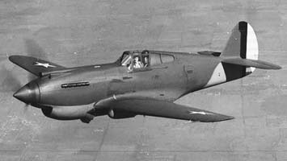

Кертисс P-40 «Уорхок» (англ. Curtiss P-40 Warhawk) — американский истребитель времён Второй мировой войны, разработанный корпорацией Curtiss-Wright.
Основой конструкции послужил истребитель «Хок-75» (P-36), выпускавшийся с 1936 года. С 1939 года поступил на вооружение ВВС США. Имел 19 модификаций. В общей сложности фирмой было построено почти 14 тыс. истребителей P-40 всех модификаций, которые находились на вооружении 26 вооружённых сил государств мира (в том числе 2243 самолёта были по ленд-лизу поставлены в СССР). Последний серийный P-40 сошёл с конвейера 30 ноября 1944 года. Поставлялись по программе ленд-лиза с конца августа 1941 по декабрь 1944, всего было получено 2425 шт. (2097 шт. из США и 230 шт. из Великобритании), их первое боевое применение имело место в ноябре — декабре 1941 года. Полные ремкомплекты и запасные моторы по программе ленд-лиза в СССР не поставлялись (несмотря на просьбы советской стороны), в результате с весны 1942 года самолёты начали выходить из строя по техническому состоянию. В дальнейшем, до 40 истребителей P-40 были переоборудованы в авиамастерских 13-й воздушной армии Ленинградского фронта (на них установили советские авиадвигатели М-105П и М-105Р), ещё один P-40E был переоборудован в двухместный самолёт-разведчик. В ВВС РККА, среди пилотов, Р-40 получил название «чудо безмоторной авиации». Это объяснялось тем, что двигатель самолёта не был рассчитан на суровые климатические условия северной части Советского Союза (а именно на севере было дислоцировано большинство Р-40) и часто давал сбои. С другой стороны, советские пилоты постоянно использовали форсаж, в то время как форсаж можно было использовать только в крайних случаях, так как постоянное использование форсажа пагубно влияет на двигатель
Под влиянием летных характеристик европейских истребителей с рядными двигателями жидкостного охлаждения корпорация "Кертисс-Райт" решила в 1938 году заменить звездообразный двигатель "Райт", используемый на серийном самолете Р-36А, двигателем с турбонаддувом "Аллисон" В-1710-19 мощностью 1160 л.с. (865 кВт). Для испытаний был взят десятый серийный самолет (30-18). Переименованный в ХР-40, он впервые полетел в октябре 1938 года и в мае 1939 года был направлен в Райтфилд для сравнения с самолетами "Белл" ХР-39 и "Северский" ХР-41. Первоначально ХР-40 имел радиатор под хвостовой частью фюзеляжа, но затем его перенесли в носовую часть, рядом с маслорадиатором. Во всех отношениях, кроме силовой установки, новый самолет не отличался от Р-36А - цельнометаллический низкоплан, основные стойки шасси убирались назад в крыло с поворотом колес на 90 градусов, заподлицо с нижней поверхностью крыла. Вооружение осталось несерьезным - пара 7,62-мм пулеметов в крыле.
Хотя прототипы других фирм, сравнивавшиеся с ХР-40, позже стали успешными серийными истребителями, самолет "Кертисс-Райт" был отобран для немедленного начала серийного производства. Контракт на закупку 524 машин Р-40 стоимостью 13 миллионов долларов явился самым большим заказом, когда-либо выданным на американский истребитель. Производство началось в конце 1939 года с партии из 200 самолетов "Хок 81 А" для Авиакорпуса Армии США с двигателем "Аллисон" В-1710-33 мощностью 1040 л.с. (776 кВт) и отличавшихся отсутствием створок на колесах и карбюратором воздухозаборника вверху носовой части. Первые три самолета использовались как прототипы (известны также как YP-40), а последующие машины были поставлены 33-й истребительной эскадрилье, переброшенной в Исландию 25 июля 1941 года.
Производство продолжалось в городе Буффало, штат Нью-Йорк, с выпуском Р-40В (построена приблизительно 131 машина). Они имели бронирование кабины и четыре 7,62-мм пулемета в крыле, наряду с двумя 12,7-мм пулеметами в носу. Ко времени нападения Японии на США в декабре 1941 года 107 самолетов Р-40 и Р-40В находились на Филиппинах, но, поскольку внезапность была достигнута, только четыре сумели взлететь. В первые четыре дня количество этих истребителей (в составе 20-й и 34-й истребительных эскадрилий) сократилось до 22. Обозначение RAF "Томахок" (Tomahawk) Mk.IIA относится к Р-40В ("Хок 81А-2"), и большинство из 110 самолетов были отправлены сразу на Ближний Восток. Еще сотню "Томахок" Mk.III из контрактов RAF отправили в Китай американской группе добровольцев.
Следующим вариантом был Р-40С ("Хок 81А-3") с протектированными топливными баками. Для авиакорпуса армии США выпустили только 193 машины, но этот самолет был основным вариантом для RAF (обозначение "Томахок" Mk.IIB). Из общего количества 945 самолетов с этим обозначением 21 были потеряны во время доставки морем и 73 были поставлены в СССР. При максимальной массе 3658 кг, по сравнению с 3119 кг у ХР-40, Р-40С был самым медленным из всех серийных вариантов, обладая максимальной скоростью лишь 528 км/ч на высоте 4590 метров. Когда он прибыл в Северную Африку в конце 1941 года, обнаружилось, что он уступает немецкому истребителю Второй мировой войны "Мессершмитт" Bf-109Е и только незначительно лучше, чем британский самолет "Харрикейн" Mk.I, поэтому, главным образом, он использовался в роли штурмовика.
P-40D ("Хок 87А-2") имел значительно переработанную конструкцию носовой части (отсюда и новое фирменное обозначение) в связи с использованием двигателя "Аллисон" В-1710-39 с выступающим наружу редуктором, что позволило сократить длину носовой части на 15,24 см. Площадь миделя носовой части была уменьшена, радиатор продвинут вперед и поджат. Основные стойки шасси укорочены, калибр четырех пулеметов в крыле увеличили до 12,7 мм, носовые пулеметы убрали. Появилась возможность нести бомбу калибра 227 кг или подвесной топливный бак вместимостью 197 литров под фюзеляжем. Самолет P-40D имел максимальную скорость 580 км/ч, но для военной авиации США выпустили только 23 экземпляра.
Р-40Е ("Хок 87А-3") - первый "Уорхок" (так назывались все серии Р-40, которые эксплуатировались в США), производившийся в больших количествах после Перл-Харбора. Он имел вооружение из шести 12,7-мм пулеметов в крыле и входил в состав первых американских истребительных эскадрилий в Великобритании в 1942 году, а также эскадрилий на Ближнем Востоке.
С полной полетной массой 4013 кг он имел максимальную скорость 570 км/ч, почти такую же, как у "Спитфайр" Mk.VC с песчаным фильтром. По американским контрактам выпустили 2320 машин и 1500 - для RAF под обозначением "Киттихок" Mk.IA. Многие из последних машин были отправлены непосредственно в ВВС Австралии (RAAF), Новой Зеландии (RNZAF) и Канады (RCAF).
Для Р-40С был выбран двигатель "Мерлин" фирмы "Роллс-Ройс", размерами соответствующий "Аллисон" В-1710, чье производство развернули в огромных масштабах к 1941 году. В течение этого года серийный истребитель Второй мировой войны P-40D (40-360) оснастили двигателем "Мерлин" 28, переименовав в XP-40F ("Хок 87D"). Хотя масса возросла до 4295 кг, более мощный английский двигатель поднял максимальную скорость до 600 км/ч на высоте 5500 метров. Этот вариант отличался отсутствием воздухозаборника карбюратора над носовой частью: заборник с отводом воздуха вниз на двигателе "Аллисон" заменили магистралью, ведущей вверх, к "Мерлину". Пересмотренная система трубопроводов была проработана на третьем серийном самолете (4113602), обозначенном как YP-40F.
Первые 260 самолетов имели такой же фюзеляж, как у Р-40Е, но увеличение площади боковой поверхности носовой части привело к сокращению продольной устойчивости, так что последующие P-40F имели хвостовую часть фюзеляжа, удлиненную на 51 см. Максимальная масса серийного варианта самолета подобралась к 4480 кг, а максимальная скорость снизилась до 586 км/ч.
Параллельно с последними P-40F производился Р-40К с несколько более мощным двигателем "Аллисон" В-1710-73 (1325 л.с./988 кВт), что увеличило максимальную скорость до 589 км/ч. Это дало ему возможность бороться с немецким самолетом времен Второй мировой войны Bf-109Е в Европе и Северной Африке и с японским истребителем "Мицубиси" А6М на Дальнем Востоке.
Еще больше мощность озросла на Р-40М с введением двигателя V-1710-81 (1360 л.с.. или 1015 кВт). Дня военной авиации США были произведены приблизительно 1300 Р-40К (первоначально предназначенных доя поставки по "ленд-лизу" в Китай) и 600 Р-40М. Модификация P-40F в RAF имела обозначения "Киттихок" Mk.II и IIA: 330 из них в качестве временной меры были получены переделкой самолетов ВВС США. Предполагалось со временем вернуть их в американские эскадрильи, но были возвращены только 80 машин. Всего в американские ВВС поставили 616 "Киттихок" Mk.III, эквивалентных Р-40М.
Выпускались или планировались другие промежуточные варианты. Приблизительно 45 самолетов P-40G были построены с фюзеляжем "Киттихока", крыльями "Томахока" RAF и с шестью крыльевыми 12,7-мм пулеметами. Все они были переданы военной авиации США. На модификации истребителя P-40J предполагалось использовать двигатель "Аллисон" с турбонагнетателем, но от постройки отказались вследствие внедрения двигателя "Мерлин". Двигатель "Паккард" V-1650-1 (лицензионный "Мерлин") установили на P-40L, 700 экземпляров которого построили для ВВС США в 1943 году (для RAF не строился). Часть машин имела два пулемета, броня и запас топлива были сокращены для улучшения летных характеристик.
Последним "Уорхоком" был самолет P-40N, запущенный в производство в конце 1943 года и начавший поступать в ВВС США в марте следующего года. Это был облегченный вариант, на котором вернулись к двигателю "Аллисон" и убрали передний фюзеляжный топливный бак. Первые серийные партии, с 1-й по 15-ю (выпуск составил 1977 машин), вооружались только четырьмя крыльевыми пулеметами и имели взлетную массу 4081 кг. За ними последовали 3023 самолета партий с 20-й по 35-ю, с двигателями V-1710-99 и вооружением, усиленным до шести пулеметов, и возможностью нести 227-кг бомбу под фюзеляжем. Заключительный серийный вариант (40-й партии) имел двигатель V-P10-115 и подкрыльевые узлы подвески двух бомб калибра 227 кг. Была заказана 1000 машин этого варианта, но производство "Уорхоков" закончилось в сентябре 1944 года, и выпустили только 220 штук. Приблизительно 588 машин, эквивалентных P-40N-20, построили для RAF как "Киттихок" Mk.IV.
В 1944 году, после начала использования двигателя "Мерлин" на истребителе Р-51, появился большой спрос на запчасти к этому двигателю, поэтому 300 P-40F и P-40L были переоборудованы под двигатель V-1710-81, их обозначения были изменены на P-40R-1 и R-2 соответственно. Три экспериментальных XP-40Q выпустили с двигателями V-1710-12 и радиаторами, перемещенными в крыло. За первым, переделанным из Р-40К (42-9987), с четырехлопастным винтом, последовала переделка Р-40К (42-45722) и P-40N (43-2457) с каплеобразным фонарем. На самолете 42-45722 позже уменьшили размах крыла до 10,79 м и перенесли радиатор обратно в носовую часть. Это был самый быстрый из всех "Уорхоков", со скоростью 679 км/ч на высоте 6273 м. Небольшое количество Р-40Е и P-40N было переоборудовано в двухместные тренировочные самолеты под обозначением TP-40N.
"Уорхоки" ВВС США служили почти на всех фронтах Второй мировой войны во многих группах истребителей и перехватчиков. Среди них 8-я и 49-я группы 5-й ВА США на Дальнем Востоке (1942-1944 годах), 15-я и 18-я истребительные группы 7-й ВА (1941-1944 годах), 57-я и 79-я истребительные группы 9-й ВА на Средиземноморском ТВД (1942-1944 годах); 51-я истребительная группа 10-й ВА в Индии и Бирме (1941-1944 годах), 27-я и 33-я истребительные группы 12-й ВА в Средиземноморье (1942-1944 годах). Они также обеспечили основу истребительной обороны ВВС США, защищавших Панамский канал в период 1941-1943 годов, служа в 16,32, 36,37, 53-й группах перехватчиков.
Можно было предполагать, что ВВС США станут использовать Р-40 на вторичных военных театрах, чтобы обеспечить расширенные поставки более современных самолетов (типа Р-38, Р-47 и Р-51). Однако массовое производство Р-40 продолжалось до конца 1944 года, когда его летные характеристики значительно уступили современным истребителям. Этот факт никогда не могли удовлетворительно объяснить, как и очень большое число выпущенных машин.
Многие "Томахоки" и "Киттихоки" также поставлялись ВВС Великобритании, Австралии (RAAF), Новой Зеландии (RNZAF) и Канады (RCAF). Относительно небольшое количество эскадрилий, оснащенных ими, объясняется тем фактом, что большая часть самолетов, приобретенных Великобританией, была передана СССР в течение 1942-1943 годов (2091 из 2430 самолетов благополучно добрались до мест службы в СССР). В течение последних двух лет войны Соединенные Штаты поставили авиации Китая 377 самолетов Р-40 (главным образом P-40N), в то время как в 1942 году некоторое количество Р-40Е было поставлено Чили, а в следующем году 89 Р-40Е были отправлены в Бразилию. Всего было произведено 16802 самолета Р-40, включая 4787 машин британских контрактов.
|  |